目录
jQuery是一个轻量级、兼容多浏览器的JavaScript库，能使用户更方便地处理HTML文档，实现动画效果、方便地进行Ajax交互。
一种是引入本地的jQuery文件，另一种是引用jQuery的cdn
<script src="https://cdn.bootcss.com/jquery/3.4.1/jquery.min.js"></script>$(选择器).action()$('#id')$('div')$('.c1')$('#d1, .c1, p')$('*') // 选择所有的标签$("div.c1") // 找到有c1 class类的div标签$("div span") // div 的所有span后代
$("div > span") // div的所有儿子span
$("div + span") // 毗邻 div紧挨着的span
$("div ~ span") // div同级下面的所有span:first // 第一个
:last // 最后一个
:eq(index)// 索引等于index的那个元素
:even // 匹配所有索引值为偶数的元素，从 0 开始计数
:odd // 匹配所有索引值为奇数的元素，从 0 开始计数
:gt(index)// 匹配所有大于给定索引值的元素
:lt(index)// 匹配所有小于给定索引值的元素
:not(元素选择器)// 移除所有满足not条件的标签
:has(元素选择器)// 选取所有包含一个或多个标签在其内的标签(指的是从后代元素找)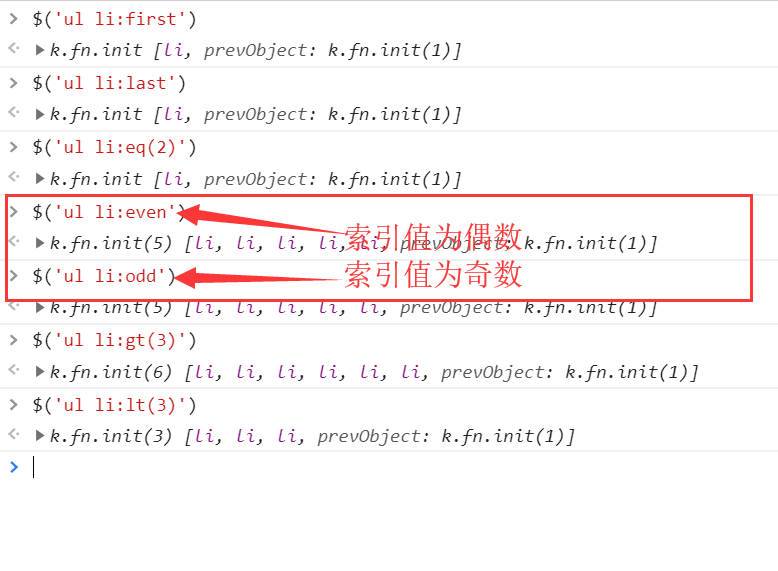
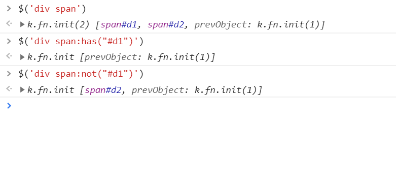
例子：
$('ul li:first') //找到ul标签下第一个li标签
$("div:has(h1)") // 找到所有后代中有h1标签的div标签
$("div:has(.c1)") // 找到所有后代中有c1样式类的div标签
$('div span:has("#d1")') // 找到div所有后代中有的id为d1的span标签
$('div span:not("#d1")') // 找到div所有后代中有的id不为d1的span标签$('[username]')
$('[username = "cwz"]')
$('p[username = "cwz"]')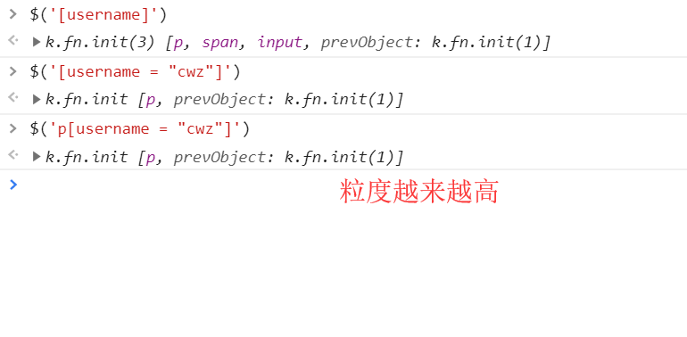
:仅仅在表单选择器上使用，默认是在input框，type属性
:text
:password
:file
:radio
:checkbox
:submit
:reset
:button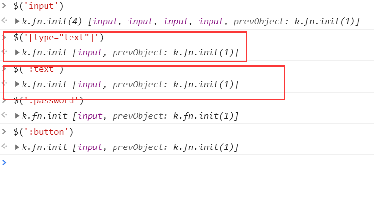
补充知识点：
<!--novalidate 取消前端给你做的校验功能-->
<form action="" novalidate></form>特殊：
$(":checkbox") // 找到所有的checkbox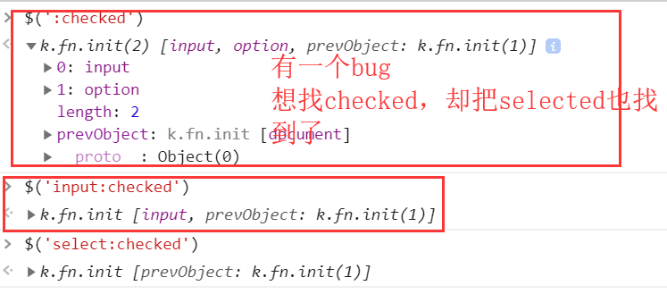
下一个元素
$("#id").next()
$("#id").nextAll() // 同级之下所有的
$("#id").nextUntil("#i2")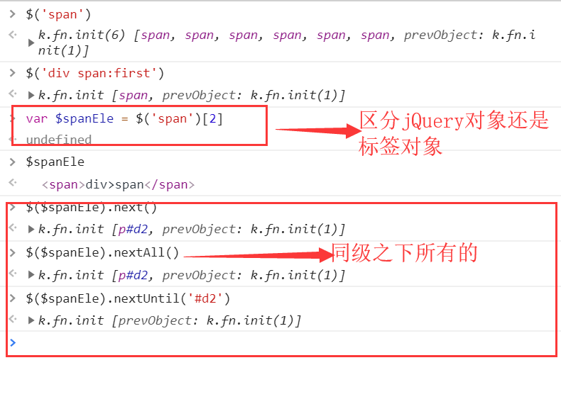
上一个元素
$("#id").prev()
$("#id").prevAll()
$("#id").prevUntil("#i2")父亲元素
$("#id").parent()
$("#id").parents() // 查找当前元素的所有的父辈元素
$("#id").parentsUntil() // 查找当前元素的所有的父辈元素，直到遇到匹配的那个元素为止。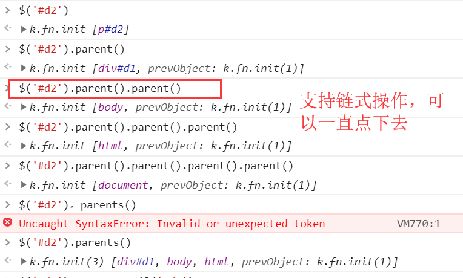
儿子和兄弟元素：
$("#id").children();// 儿子们
$("#id").siblings();// 兄弟们.first() // 获取匹配的第一个元素
.last() // 获取匹配的最后一个元素
.not() // 从匹配元素的集合中删除与指定表达式匹配的元素
.has() // 保留包含特定后代的元素，去掉那些不含有指定后代的元素。
.eq() // 索引值等于指定值的元素
$('div span:first') // 等价操作：
$('div span').first()filter筛选
$("div").filter(".c1") // 从结果集中过滤出有c1样式类的
// 等价于 $("div.c1")addClass(); // 增加类
removeClass(); // 移除指定的类
hasClass(); // 判断样式是否存在
toggleClass(); // 有则移除，没有就增加例子：开关灯实例
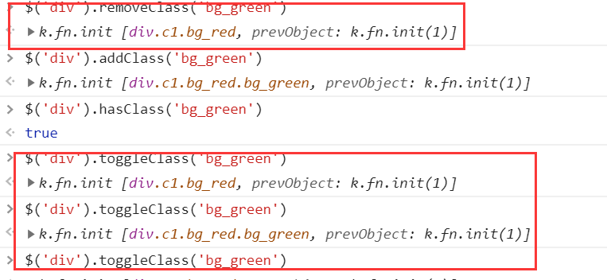
修改css有样式
<div>
<p>11</p>
<p>22</p>
</div>需求：把11所在标签变为红色，22所在标签变为绿色
$('div').children().first().css('color','red').next().css('color','green')offset() // 获取匹配元素在当前窗口的相对偏移或设置元素位置
position() // 获取匹配元素相对父元素的偏移
scrollTop() // 获取匹配元素相对滚动条顶部的偏移
scrollLeft() // 获取匹配元素相对滚动条左侧的偏移$(window).scrollTop(0) // 浏览器滚动条能快速回到顶部height()
width()
innerHeight()
innerWidth()
outerHeight()
outerWidth()示例：
$('p').innerHeight()
60.8
$('p').innerWidth()
820$('div').text() // 获取文本值
$('div').html() // 获取html代码
$('div').text('有点意思') // 设置文本值
$('div').html('<h1>有点意思</h1>') // 设置所有匹配元素的html内容，识别内容里的标签元素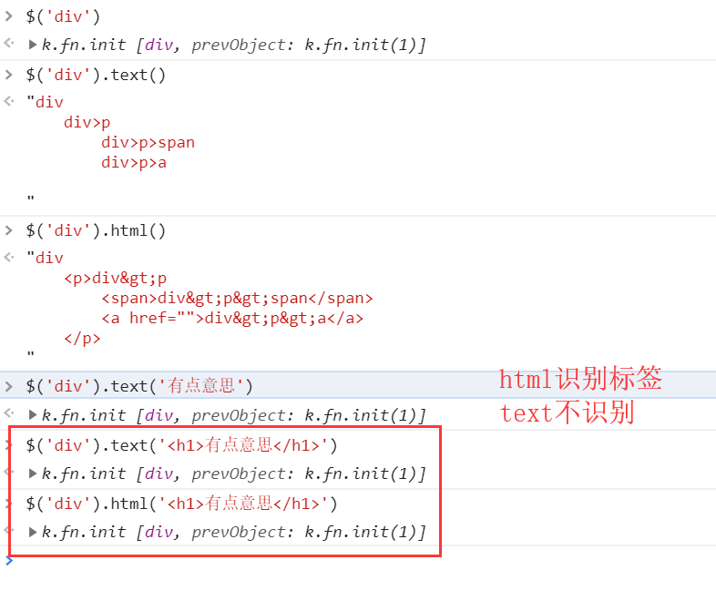
获取用户输入的值
$('input').val()
$('input').val('阿什顿') // 不加参数，获取值；加了参数，设置值自定义登录校验示例：
<!DOCTYPE html>
<html lang="en">
<head>
<meta charset="UTF-8">
<title>Title</title>
<script src="https://cdn.bootcss.com/jquery/3.4.1/jquery.min.js"></script>
</head>
<body>
<h1>注册页面</h1>
<form action="">
<p>
username:<input type="text" id="d1">
<span style="color: red" class="errors"></span>
</p>
<p>
password:<input type="password" id="d2">
<span style="color: red" class="errors"></span>
</p>
<p>
<input type="button" value="按钮" id="submit">
</p>
</form>
<script>
var btnEle = $('#submit')[0];
btnEle.onclick = function () {
// 获取用户输入的用户名 密码
var userNameVal = $('#d1').val();
var passWordVal = $('#d2').val();
// 检验用户名和密码是否输入
if (userNameVal.length === 0) {
// 去对应的提示框中 展示错误信息
$('.errors').first().text('用户名不能为空')
}
if (passWordVal.length === 0) {
// 去对应的提示框中 展示错误信息
$('.errors').last().text('密码不能为空')
}
};
var inputEleList = $('input');
for(let i=0;i<inputEleList.length;i++){
inputEleList[i].onfocus = function () {
$(this).next().text('')
}
}
</script>
</body>
</html>attr(attrName) // 返回第一个匹配元素的属性值
attr(attrName, attrValue) // 为所有匹配元素设置一个属性值
attr({k1: v1, k2:v2}) // 为所有匹配元素设置多个属性值
removeAttr() // 从每一个匹配的元素中删除一个属性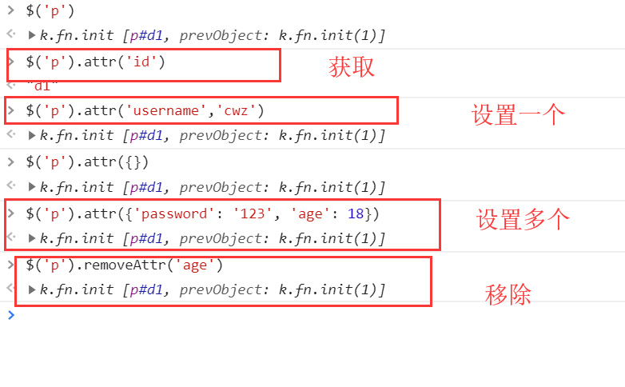
对于checked和radio：
// attr()不能动态获取用户输入的内容,而prop()可以判断用户是否选中
$('input').first().attr('checked', 'checked') // 不能设置值
$('input').first().prop('checked', 'checked') // 可以设置值移除属性：
// $('input').first().removeProp('checked') 已经没有效果了
$('input').first().prop('checked', false)注意：在1.x及2.x版本的jQuery中使用attr对checkbox进行赋值操作时会出bug，在3.x版本的jQuery中则没有这个问题。为了兼容性，我们在处理checkbox和radio的时候尽量使用特定的prop()，不要使用attr("checked", "checked")。
总结：
var pEle = document.createElement('p')
$('body').append(pEle)
$(pEle).appendTo('body') // 两者效果一样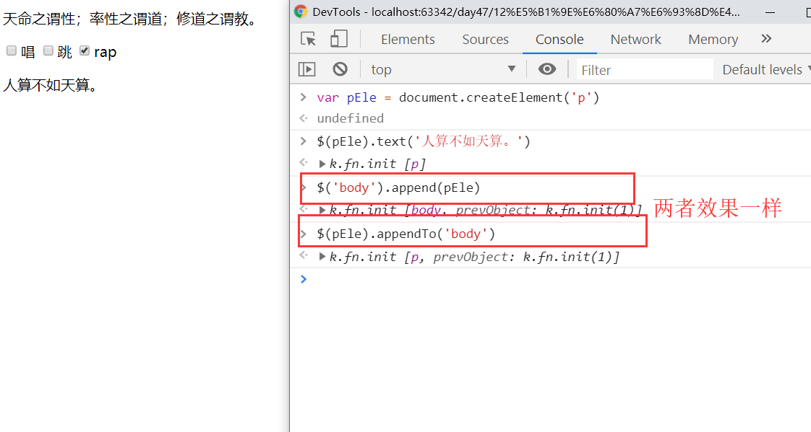
$(A).prepend(B) // 把B前置到A
$(A).prependTo(B) // 把A前置到B$(A).after(B) // 把B放到A的后面
$(A).insertAfter(B) // 把A放到B的后面$(A).before(B) // 把B放到A的前面
$(A).insertBefore(B) // 把A放到B的前面remove() // 从DOM中删除所有匹配的元素。
empty() // 删除匹配的元素集合中所有的子节点。close() //默认只克隆html和css，不克隆js close(true) 克隆所有克隆示例
<!DOCTYPE html>
<html lang="en">
<head>
<meta charset="UTF-8">
<title>Title</title>
<script src="https://cdn.bootcss.com/jquery/3.4.1/jquery.min.js"></script>
<style>
button {
height: 100px;
width: 150px;
background-color: red;
border: 3px solid darkgrey;
color: white;
font-size: 18px;
}
</style>
</head>
<body>
<button>不经一番寒彻骨，怎得梅花扑鼻香。</button>
</body>
<script>
// var btnEle = $('button')[0];
// btnEle.onclick = function () {
// $(this).clone(true).insertAfter(this)
// }
// jQuery事件的绑定方式
$('button').on('click', function(){
$(this).clone(true).insertAfter(this)
})
</script>
</html>click(function(){...})
hover(function(){...})
blur(function(){...})
focus(function(){...})
change(function(){...})
keyup(function(){...})事件名(function(){
// 事件代码
})
$(选择器).on('事件名',function(){
// 事件名
}) // 这种用途更广<script>
$('span').hover(
function () { // 鼠标悬浮上去的时候触发，如果只写了一个函数，那么悬浮和移开，只写同一个
alert('欢迎光临~')
},
function () {
alert('再见阿布~')
}
)
</script><script>
$('input').on('input',function () {
// 获取用户输入内容
console.log($(this).val())
})
</script>两种方法：
return false; // 常见阻止表单提交等<form action="">
<input type="submit">
<span></span>
</form>
<script>
$('input').click(function (e) {
$(this).next().text('有点意思~');
// 阻止标签后续的事件
// return false
// 方法2
e.preventDefault()
})
</script><!DOCTYPE html>
<html lang="en">
<head>
<meta charset="UTF-8">
<title>Title</title>
<script src="https://cdn.bootcss.com/jquery/3.4.1/jquery.min.js"></script>
</head>
<body>
<div>div
<p>p
<span>span</span>
</p>
</div>
</body>
<script>
$('div').click(function () {
alert('div')
});
$('p').click(function () {
alert('p')
});
$('span').click(function () {
alert('span')
})
</script>
</html>产生的效果：span标签在最里面，当点击span时，弹出框弹出三次。
事件冒泡：一层一层往上触发
阻止事件冒泡：e.stopPropagation()
$(document).ready(function(){
// 在这里写你的JS代码...
})
// 简写
$(function(){
// 你在这里写你的代码
})
你只要保证你的js代码写在body最下方即可
如果想让你后续动态创建的标签也有事件，那么建议你使用事件委托。
事件委托是通过事件冒泡的原理，利用父标签去捕获子标签的事件。
$('body').on('click','button',function () {
alert(123)
})$('.c1').hide(5000); // 5000毫秒之内隐藏
$('.c2').show(5000); // 5000毫秒之内显示
$('.c2').toggle(5000); // 有内容就消失，没内容就显示
$('.c1').slideUp(5000); // 向上卷起
$('.c1').slideDown(5000) // 向下出来
$('.c1').fadeOut(5000); // 渐渐消失
$('.c1').fadeIn(5000); // 渐渐显示
$('.c1').fadeTo(5000, 0.4) // 0.4是透明度
// 自定义（了解即可）
animate(p,[s],[e],[fn])自定义动画示例：
<!--点赞示例-->
<!DOCTYPE html>
<html lang="en">
<head>
<meta charset="UTF-8">
<title>Title</title>
<script src="https://cdn.bootcss.com/jquery/3.4.1/jquery.min.js"></script>
<style>
div {
position: relative;
display: inline-block;
}
div>i {
display: inline-block;
color: red;
position: absolute;
right: -16px;
top: -5px;
opacity: 1;
}
</style>
</head>
<body>
<div id="d1">点赞</div>
<script>
$("#d1").on("click", function () {
var newI = document.createElement("i");
newI.innerText = "+1";
$(this).append(newI);
$(this).children("i").animate({
opacity: 0
}, 1000)
})
</script>
</body>
</html>前端for循环
li =[1,2,3,4,5]
$.each(li,function(index, obj){
console.log(index, obj); //index是索引，ele是每次循环的具体元素。
})
// 输出
0 1
1 2
2 3
3 4
4 5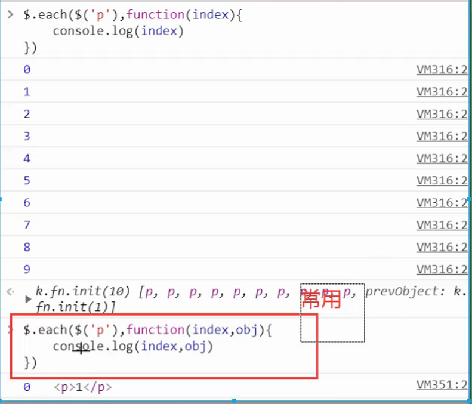
.each(function(index, Element))：
描述：遍历一个jQuery对象，为每个匹配元素执行一个函数。
.each() 方法用来迭代jQuery对象中的每一个DOM元素。每次回调函数执行时，会传递当前循环次数作为参数(从0开始计数)。由于回调函数是在当前DOM元素为上下文的语境中触发的，所以关键字 this 总是指向这个元素。
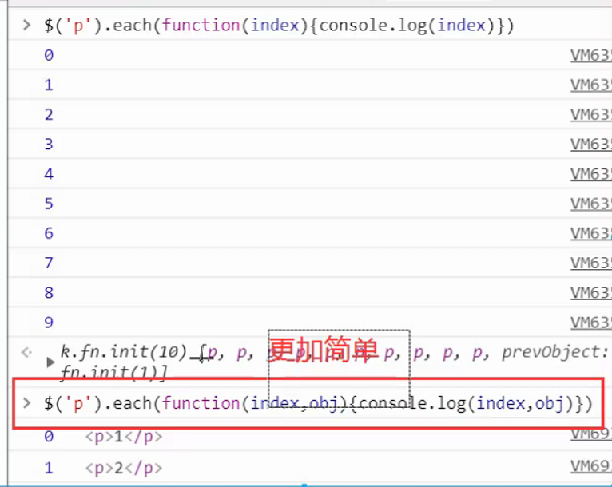
注意：
在遍历过程中可以使用 return false提前结束each循环。
.data(key, value):
描述：在匹配的元素上存储任意相关数据。
$("div").data("k",100);//给所有div标签都保存一个名为k，值为100.data(key):
描述: 返回匹配的元素集合中的第一个元素的给定名称的数据存储的值—通过 .data(name, value)或 HTML5 data-*属性设置。
$("div").data("k");//返回第一个div标签中保存的"k"的值.removeData(key):
描述：移除存放在元素上的数据，不加key参数表示移除所有保存的数据。
$("div").removeData("k"); //移除元素上存放k对应的数据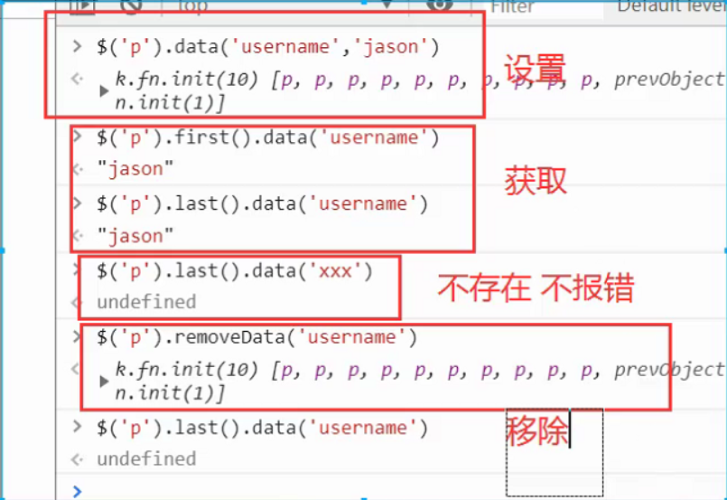